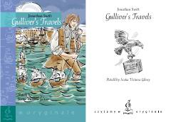

GTLemuel Gulliverning mitti odamlar mamlakatidagi qiziqarli va g'aroyib sarguzashtlari.
Gulliverning sayohatlari Lemuel Gulliver ismli shifokorning kutilmaganda Lilliputlar mamlakatiga tushib qolishi va u yerdagi mitti odamlar bilan bo'lgan sarguzashtlari haqida hikoya qiladi. Ushbu asar inson tabiati va jamiyatdagi illatlarni hajviy yo'l bilan ochib beruvchi jahon adabiyotining klassik namunalaridan biridir.